操作詳解
出自多玩《怪物獵人P3》數據庫
|
|

目錄 |
基本操作
| 方向鍵 |
視角變更 |
| 搖桿 | 玩家移動 |
| △鍵 | 亮出武器 移動中三角鍵，拔刀攻擊（弩除外） |
| ○鍵 | 調查 爬臺階 決定選項 |
| ×鍵 |
蹲下 |
| □鍵 | 物品使用 收武器 |
| L鍵 | L鍵輕按後放開：視角歸為玩家方向 L鍵按住：大開選擇物品視窗 L＋口or〇：物品選擇 L＋△or×：瓶、彈藥選擇（弓弩專用） |
| R鍵 | 移動＋R：衝刺 持武器時R，或者收武器時R＋〇＋△：武器特殊動作。（參照武器使用方法） |
| SELECT鍵 | 腳踢 |
| START鍵 | 打開/關閉菜單 |
單手劍
|
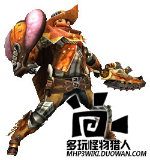 | △鍵 | 斬擊（連續輸入可以連續攻擊）切斷屬性 |
| ○鍵 | 水平斬 切斷屬性 | |
| △+○鍵 | 跳躍斬 切斷屬性 | |
| ×鍵 |
迴避動作 | |
| □鍵 | 收武器 | |
| R鍵 | 防禦 防禦中〇：防禦攻擊 防禦中△：撈斬 防禦中口：使用物品 | |
| SELECT鍵 | 迴旋斬 | |
| 收刀狀態時R＋〇＋△ | 防禦 | |
| 前滾或跳斬后△ | 撈斬 | |
| 連續攻擊中按×鍵 | 可以派生出迴避動作。 | |
| 搖桿向前方推動的同時按〇 | 盾攻擊 打擊屬性 | |
| 盾攻擊后〇鍵 | 背拳擊打 打擊屬性 | |
| 水平斬后〇鍵 | 逆向斬 切斷屬性 ※連續技專用攻擊 | |
| 關於攻擊派生 | △鍵的連續攻擊中可以派生出〇鍵的攻擊。 各中攻擊后按〇＋△可以派生出「迴旋斬」。 |
雙刀
|
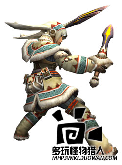 | △鍵 | 二段斬（連續輸入可連續攻擊） 雙劍的所有攻擊都是切斷屬性 |
| ○鍵 | 右二連斬（鬼人化時是雙迴旋斬） | |
| △+○鍵 | 橫掃（鬼人化時是亂舞） | |
| ×鍵 |
迴避動作 | |
| □鍵 | 收武器 | |
| R鍵 | 鬼人化（鬼人化中是鬼人化解除） | |
| 收刀狀態時R＋〇＋△ | 鬼人化（鬼人化中消耗耐力） | |
| 前滾或橫掃后△ | 撈斬 | |
| △鍵的攻擊中按〇鍵 | 可以接二連斬，按×鍵可以派生迴避動作。 | |
| 鬼人強化 | 鬼人化時攻擊命中怪物后，「鬼人槽」會增長。鬼人槽蓄滿后，「通常狀態」會變成「鬼人強化狀態」，攻擊速度上升，還能使用特殊行動。 ※「鬼人槽」經過一定時間或者使用特殊行動後會減少。 | |
| 鬼人化中，或者鬼人強化中×鍵 | 鬼人迴避 可以快速連續迴避（要消耗耐力）（鬼人強化狀態時還要消耗鬼人槽） | |
| 鬼人強化狀態中二段斬，或者二連斬后〇＋△（消耗鬼人槽） | 鬼人連斬 ※連續技專用 |
大劍
|
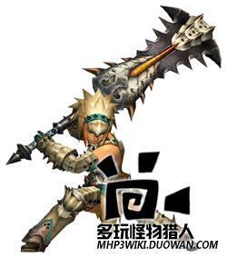 | △鍵 | 縱斬（按住可以蓄力） 切斷屬性 |
| ○鍵 | 橫掃 切斷屬性 | |
| △+○鍵 | 撈斬 切斷屬性 | |
| ×鍵 |
迴避動作 | |
| □鍵 | 收武器 | |
| R鍵 | 防禦 防禦中△：腳踢 | |
| 收刀狀態時R＋〇＋△ | 防禦 | |
| 短按△的拔刀攻擊 | 縱斬 快速攻擊 | |
| 長按△的拔刀攻擊 | 蓄力斬 | |
| 關於蓄力斬 | 蓄力斬的蓄力段數和蓄力時間有關。蓄力時間越長，身上閃光越強，但是蓄力過頭反而會變弱。抓準閃光最大瞬間，掌握好時機放開按鍵威力會大幅度上升。 | |
| 腳踢或縱斬后按△ | 拍擊 打擊屬性 ※連續技專用 | |
| 拍擊后推動搖桿的同時按△鍵 | 強蓄力斬 切斷屬性 ※連續技專用 |
太刀
|
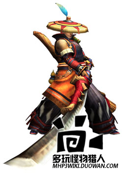 | △鍵 | 踏前斬(太刀的所有攻擊都是切斷屬性) |
| ○鍵 | 突刺 | |
| △+○鍵 | 後退斬 | |
| ×鍵 |
迴避動作 | |
| □鍵 | 收武器 | |
| R鍵 | 氣刃斬（只有有煉氣槽就可以連續輸入） | |
| 收刀狀態時R＋〇＋△ | 氣刃斬 | |
| 關於煉氣槽 | 通常攻擊命中后，畫面上方紅色的「煉氣槽」會積攢。 在這個狀態下按R鍵，可以消耗煉氣槽，釋放強力的「氣刃斬」。 | |
| 攻擊后，推動搖桿的左（或右）的同時按下〇＋△ | 移動斬 ※連續技專用攻擊 | |
| 氣刃斬連續輸入3次後按R鍵（消費煉氣槽） | 氣刃大回旋斬 ※連續技專用攻擊 | |
| 關於氣刃大回旋斬 | 攻擊怪物后煉氣槽周圍的顏色會變化，攻擊力上升。 （這個效果經過一定時間後會消失） |
斬擊斧
|
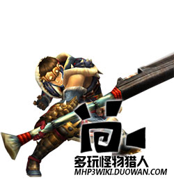 | △鍵 | 縱斬 移動中△：衝刺斬（斧模式專用） 斬斧在斧模式下的所有攻擊都是「切斷屬性」 |
| ○鍵 | 橫斬 | |
| △+○鍵 | 斧模式時：撈斬 劍模式時：屬性釋放突刺 | |
| ×鍵 |
迴避動作 | |
| □鍵 | 收武器 | |
| R鍵 | 變形 | |
| SELECT | 撈斬 | |
| 收刀狀態時R＋〇＋△ | 變形攻擊 | |
| 攻擊后立即搖桿的左右＋Ｘ鍵 | 側滑步 | |
| 關於斬擊槽 | 斬擊槽消耗后，只要不是劍模式，就能漸漸回覆斬擊槽。 出現RELOAD訊號時，按R鍵裝填，可以回覆斬擊槽。 | |
| 劍模式的特徵 | 劍模式時，可以消耗斬擊槽，使用內藏瓶子的效果。 | |
| 屬性釋放突刺后，△連打 | 大量消耗斬擊槽，將瓶子的效果一口氣釋放的，能造成巨大傷害。 ※搖桿向後方推動時連打可以快速釋放。 ※連續技專用 | |
| 斧模式時：撈斬之後〇鍵 | 揮舞 連打時會不停消耗耐力連續攻擊。 ※連續技專用 | |
| 斧模式時：衝刺斬后，R鍵 劍模式時：橫斬后，R劍 | 變形攻擊 變更武器模式的同時攻擊。 ※連續技專用 |
錘子
|
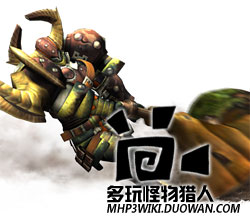 | △鍵 | 縱揮擊（可以連續3次輸入） ※第二擊之後按R鍵可以蓄力派生 錘的所有攻擊都是「打擊屬性」 |
| ○鍵 | 橫揮擊 ※按R鍵可以蓄力派生 ※按△鍵可以連續縱擊 | |
| ×鍵 |
迴避動作 | |
| □鍵 | 收武器 | |
| R鍵 | 蓄力（R鍵放開後有3個階段的攻擊變化 蓄力時消耗耐力 ） | |
| 收刀狀態時R＋〇＋△ | 蓄力 | |
| 關於攻擊派生 | 各種攻擊後接續蓄力，或者蓄力後接續各種攻擊都成為可能。可以通常攻擊和蓄力之間無間斷的連續。 | |
| 關於蓄力攻擊 | 持續按住R鍵可以蓄力 放開R鍵可以釋放強力攻擊，根據蓄力時間，有3個階段的變化 | |
| 蓄力階段1 | 揮擊（按△可派生連擊） 按〇或△可連續通常攻擊 | |
| 蓄力階段2 | 撈擊 按〇或△可連續通常攻擊 | |
| 蓄力階段3 | 按住搖桿時放開R鍵 迴旋攻擊 ※2～3次迴旋后△：掄擊 ※4～5次迴旋后△：上擊 | |
| 不推搖桿時放開R鍵 | 砸地 大地一擊 |
狩獵笛
|
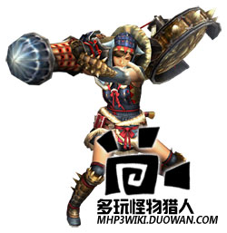 | △鍵 | 左掄打擊屬性 |
| ○鍵 | 右掄打擊屬性 | |
| 〇＋△鍵 | 演奏（演奏后按R鍵追加演奏）打擊屬性 | |
| SELECT鍵 | 笛柄攻擊 切斷屬性 | |
| ×鍵 |
迴避動作 | |
| □鍵 | 收武器 | |
| R鍵 | 演奏（演奏后按R鍵追加演奏）打擊屬性 | |
| 收刀狀態時R＋〇＋△ | 演奏 | |
| 關於旋律的演奏 | 狩獵笛每次攻擊都會在畫面上風的演奏槽積累音色。 湊齊了特定音符后按下R鍵演奏可以得到旋律效果。根據音符的組合，能發動不同的效果。 【狩獵笛的樂譜】 | |
| 按住搖桿前方的同時按△鍵 | 前方攻擊 打擊屬性 | |
| '按住搖桿前方的同時〇＋△' | 砸地 打擊屬性 |
長槍
|
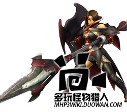 | △鍵 | 中段刺（可以連續輸入3次） 切斷屬性 |
| ○鍵 | 上段刺（可以連續輸入3次） 切斷屬性 | |
| 〇＋△鍵 | 橫掃 切斷屬性 | |
| SELECT鍵 | 衝刺 切斷屬性 衝刺中△或〇：衝刺完結 衝刺攻擊中消耗耐力。 衝刺中Ｘ：停止 | |
| ×鍵 |
后跳 | |
| □鍵 | 收武器 | |
| R鍵 | 防禦 防禦中△：防禦刺 切斷屬性 防禦中〇＋△：衝刺 切斷屬性 | |
| 收刀狀態時R＋〇＋△ | 防禦 防禦中也可以移動 | |
| 攻擊后立即搖桿＋Ｘ | 組合可以接續後跳和側跳 | |
| R＋〇（R長按） | 防禦反擊 切斷屬性 ※防禦中也可 | |
| 'R＋〇（R短按）' | 取消反擊 切斷屬性 ※防禦中也可 | |
| 防禦中按住方向鍵時按△鍵 | 防禦前進 | |
| 防禦前進中△鍵 | 盾攻擊 打擊屬性 ※連續專用攻擊 |
銃槍
|
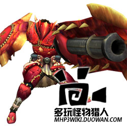 | △鍵 | 前方刺（可以連續3次攻擊） 移動中△：踏步上刺 |
| ○鍵 | 炮擊 鋒利度最差狀態（鋒利度槽紅色閃爍）不能進行炮擊。 炮擊、龍擊炮以外的攻擊，都是切斷屬性 | |
| 〇＋△鍵 | 撈擊 | |
| ×鍵 |
后跳 | |
| □鍵 | 收武器 | |
| R鍵 | 防禦 防禦中△：上方刺 防禦中〇：裝填 防禦中〇＋△：龍擊炮 龍擊炮發射后需要冷卻，一定時間內無法再次使用。 | |
| 收刀狀態時R＋〇＋△ | 防禦 防禦中也可以移動 | |
| 攻擊后立即搖桿＋Ｘ鍵 | 可以接續後跳或側跳。（炮擊后不能接回避） | |
| 炮擊后〇 鍵 | 快速裝填 只能裝填1顆彈藥。 ※連續技專用 | |
| '各種攻擊后，或者快速裝填后，按住R的同時〇鍵' | 蓄力炮擊 釋放高威力的炮擊。 可以接續迴避動作。 ※連續技專用 | |
| 快速裝填后，或者前刺的第二擊之後△鍵 | 砸擊 可以接續「龍擊炮」「全彈發射」。 ※連續技專用 | |
| 砸擊后〇鍵 | 全彈發射 射出全部彈藥。殘餘彈藥數越多威力越大。 ※連續技專用 |
輕弩
|
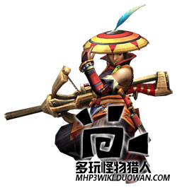 | △鍵 | 裝填 |
| ○鍵 | 發射 | |
| ×鍵 |
小跳 | |
| □鍵 | 收武器 | |
| R鍵 | 短按：進入狙擊鏡模式 按住：進入簡易瞄準模式（用方向鍵瞄準） 回到通常畫面 | |
| SELECT鍵 | 近身攻擊 打擊屬性 | |
| 搖桿和方向鍵 | 移動準星 |
重弩
|
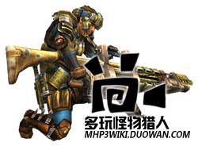 | △鍵 | 裝填 |
| ○鍵 | 發射 | |
| ×鍵 |
小跳 | |
| □鍵 | 收武器 | |
| R鍵 | 短按：進入狙擊鏡模式 按住：進入簡易瞄準模式（用方向鍵瞄準） 回到通常畫面 | |
| SELECT鍵 | 近身攻擊 打擊屬性 | |
| 搖桿和方向鍵 | 移動準星 | |
| 按下〇＋△后， 用△或Ｘ鍵選擇彈種， 最後用〇確定 | 蹲下射擊 無法移動，但可以暫時增加最大裝填數。 按住〇可以連續發射子彈。 ※按Ｘ鍵回到通常狀態。（這次的體驗版中lv3通常彈和lv1減氣彈對應蹲下射擊） | |
| 收武器狀態時R＋〇＋△ | 彈丸變更 L鍵按住打開物品視窗，用△或Ｘ變更彈丸 |
弓
|
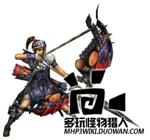 | △鍵 | 拉弓弦（放開△鍵發射） 拉弓期間消耗耐力 |
| ○鍵 | 近身攻擊 切斷屬性 | |
| 〇＋△鍵 | 瓶裝填 | |
| ×鍵 |
后跳 | |
| □鍵 | 收武器 | |
| R鍵 | 瞄準（可用方向鍵操作） | |
| 收武器裝填時R＋〇＋△ | 近身攻擊 | |
| 關於瓶變更 | 按住L打開物品視窗，用△或Ｘ鍵變更瓶。 瓶子每射擊1次消耗1個，使用中的瓶子在耐力槽下方顯示剩餘個數。 | |
| 拉住弓弦的時候口鍵 | 迴避動作 | |
| 蓄力到一定狀態后 （按住△鍵的同時）〇鍵 | 曲射 | |
| 關於曲射 | 把特殊的箭射向上空，可以怪物的頭頂攻擊。雖然很難命中，卻蘊藏著強大的威力。 能夠奪取怪物的耐力，誘發眩暈狀態。 ※曲射可能狀態時，用R箭瞄準會出現曲射落下地點的標記，可以用方向鍵控制。 方向鍵上可以讓落下地點變遠，方向鍵下可以讓落下地點變近。 |